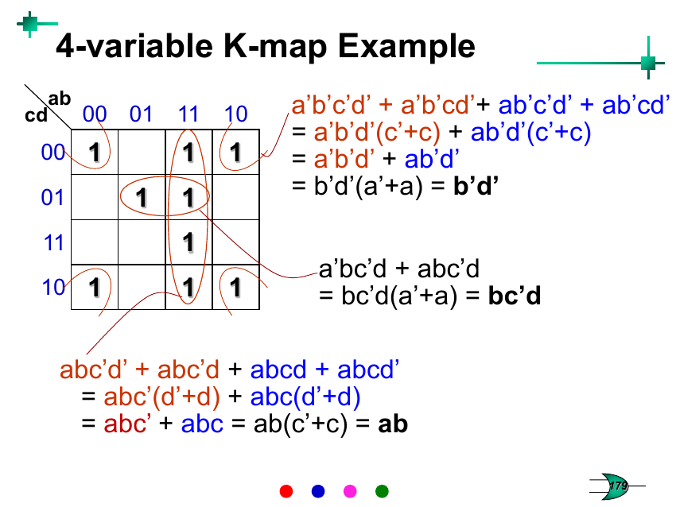
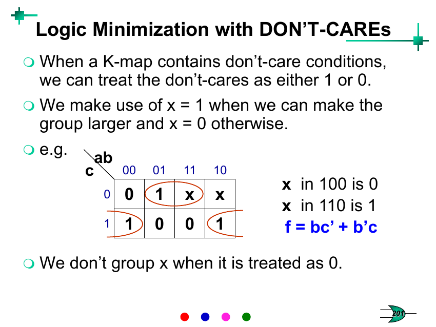

Week 5 — Karnaugh Maps
Lecture: "Karnaugh Maps" (slides 166–205) · Tutorial 5
📚 Slides, Slowly
What problem is this actually solving?
Week 4's algebra simplification (factoring, T9/T10/T11) works, but it's easy to make a mistake or miss a possible simplification when you're just staring at an expression. The Karnaugh Map (K-map) turns the exact same simplification process into a visual pattern-matching game — if you can spot rectangles of 1s, you can minimise a function almost without doing algebra at all. It's not a different technique from Week 4; it's the same theorem (T10: XY+XȲ=X) applied automatically by geometry.
Building the grid
Each square in a K-map is exactly one minterm. For n variables there are 2n minterms, so the map has 2n squares — 4 squares for 2 variables, 8 for 3, 16 for 4. You fill in a 1 wherever that minterm makes the function true, and a 0 (or leave blank) everywhere else — reading straight off a truth table or a minterm list.
The one rule that makes it all work: Gray code ordering
The row/column headers are not in normal binary counting order (00, 01, 10, 11) — they're in Gray code order (00, 01, 11, 10), the exact same reordering from Week 1 where only one bit changes between neighbours. This is the whole trick: because neighbouring squares differ in only one variable, two adjacent 1s always share a common factor that can be pulled out by T10, and grouping them visually does the algebra for you automatically.
Worked from the slides: f = m2+m6 = a′bc′+abc′ = bc′(a′+a) = bc′ — the K-map lets you see that a′bc′ and abc′ sit right next to each other (they differ only in the 'a' column position) and read off "bc′" directly, without writing out a single line of algebra.
Grouping rules — memorise these three
- Cover every 1-square using the fewest possible groups.
- A group's size must be a power of 2 — 1, 2, 4, 8, or 16 squares. Never 3, 5, 6, or 7.
- Make every group as large as possible — a bigger group eliminates more variables (grouping 4 squares eliminates 2 variables; grouping 8 eliminates 3, and so on).
One more wraparound rule that trips people up: the map wraps around — the leftmost and rightmost columns are adjacent to each other, and the top and bottom rows are adjacent to each other (because Gray code "wraps" too: …,11,10,00,… only changes one bit across that wrap). A K-map is really drawn on the surface of a torus, flattened out for convenience.

Implicants, prime implicants, essential prime implicants
| Implicant | any valid group of 1s (size 1, 2, 4, 8…) — every group you could legally draw, whether or not it's the best choice. |
|---|---|
| Prime implicant (PI) | a group that can't be made any bigger — you've grown it as far as the grouping rules allow. These are the only groups worth actually using in a final answer. |
| Essential prime implicant (EPI) | a prime implicant that is the only one covering at least one particular 1-square. If you don't include it, that square never gets covered by anything else — so it's mandatory, not optional. |
The minimisation recipe: find every prime implicant, identify which ones are essential (forced), include all of them, then add the fewest possible extra (non-essential) prime implicants to mop up any 1-squares still left uncovered.
Product-of-Sums (POS) — the mirror image
Everything above covers the 1s to get a Sum-of-Products. If you instead group the 0-squares using the exact same rules, you get an expression for f′ (SOP), and complementing that (DeMorgan) gives f directly in Product-of-Sums form — no extra new technique needed, just point the same tool at the 0s instead of the 1s.
XOR/XNOR patterns, odd/even functions
On a K-map, XOR and XNOR functions show up as a distinctive checkerboard pattern (1s on diagonal squares) that can never be grouped into anything bigger than single squares — a visual signature that a function is "not really simplifiable" by grouping, because XOR-type functions are true only when an odd number of inputs are 1 (which is why an n-input XOR is called an odd function, and XNOR — true when an even number of inputs are 1 — is called an even function).
Don't-care conditions
Sometimes certain input combinations are known to never actually occur (e.g. invalid BCD codes 1010–1111), so the function's value there is irrelevant — marked 'x' or 'd' on the map. The rule of thumb: treat each don't-care as whichever value (0 or 1) helps you build a bigger group — and simply ignore/don't-group the ones that don't help. Don't-cares are pure upside: they can only make your final expression smaller or equal, never bigger, so always check whether including one lets a group grow.

🔗 Tutorial 5, Linked Back
Plot f(A,B,C,D)=Σm(1,3,5,7,8,9,10,11,15) on a K-map; list the implicants, prime implicants, and essential prime implicants.
Plot all 9 minterms, then hunt for the largest possible legal groupings (powers of 2) before settling for smaller ones.
Prime implicants: CD, B′D, A′D, AB′ (four 4-square/2-square groups — CD and AB′ are 4-square groups, A′D and B′D are also 4-square groups here since m1,3,5,7 group into A'D and m1,5,9,13-would-be into B'D, but only the subset actually present matters for covering).
Essential prime implicants: CD (the only PI covering m15), A′D (the only PI covering m5), AB′ (the only PI covering m10) — three EPIs. Checking coverage: CD∪A′D∪AB′ = {3,7,11,15}∪{1,3,5,7}∪{8,9,10,11} = {1,3,5,7,8,9,10,11,15} — exactly the target set, so B′D turns out to be a valid PI that isn't actually needed.
Minimized function: f = CD + A′D + AB′.
Minimize f(A,B,C,D)=Σm(0,1,4,6,9,13,14,15). How many prime implicants and essential implicants?
Working through the groupings carefully, every one of the 8 target minterms turns out to be coverable by two different equally-good prime implicants — meaning there isn't a single square that forces a particular choice. That's a genuinely different situation from Q1, and it's worth noticing when it happens rather than assuming there's always one "right" answer.
Answer: 8 total prime implicants exist, but 0 are essential. One valid minimal 4-term cover (matching the tutorial's given answer) is: f = A′C′D′ + B′C′D + ABD + BCD′. A different, equally minimal, equally correct cover also exists by swapping which PI you pick for each pair.
Using a K-map, expand into canonical SOP form: (a) f=AB̄+ĀCD+BC̄D̄, (b) f=(A+B̄)(C+D̄)(Ā+C).
This is minimisation in reverse: plot the given (already compact) expression directly onto the K-map — each term covers a block of squares — then read off every individual 1-square as its own minterm.
(a) f = Σm(3,4,7,8,9,10,11,12) = ĀB̄CD + ĀBCD + ĀBCD̄ + AB̄C̄D̄ + AB̄C̄D + AB̄CD̄ + AB̄CD + ABC̄D̄.
(b) f = Σm(0,2,3,10,11,14,15) = ĀB̄C̄D̄ + ĀB̄CD̄ + ĀB̄CD + AB̄CD̄ + AB̄CD + ABCD̄ + ABCD.
y(a,b,c,d)=Σm(0,1,3,8,10,14)+d(2,4,9,11,12). Find the minimized SOP and POS.
Plot the required minterms as 1, the don't-cares as 'x', then group freely — treating each 'x' as whichever value grows the group more, and simply not grouping the x's that don't help.
SOP: y = b′ + ad′. POS: y = (a+b′)(b′+d′) — note both forms end up needing only the variables b and (a or d), a huge reduction from a 4-variable function, entirely thanks to the don't-cares giving the groups room to grow.
Is f(A,B,C,D)=ABC+ACD′+A′C′+BC′D minimized? If not, minimize it.
Expand to find which minterms this covers: {0,1,4,5,10,13,14,15}. Plot these on a K-map: A′C′ and ACD′ turn out to be essential (each is the only PI covering some square), covering {0,1,4,5} and {10,14} respectively — leaving only m13 and m15 still needing coverage. The given expression covers those with two separate terms (ABC covers 14,15; BC′D covers 5,13) — but a single group ABD covers both 13 and 15 at once, doing the same job with one fewer term.
Answer: not minimized. Minimal form: f = A′C′ + ACD′ + ABD (3 terms, 8 literals) — down from the original 4 terms, 11 literals.
Derive F from the given 4-input gate circuit (A,B,C,D), then express it in minimized POS form using a K-map.
Trace the circuit gate by gate exactly as drawn (an inverter here, an AND there, an XOR/XNOR further along), write the raw expression for F straight from that structure, build its truth table, then re-plot on a K-map and group the zeros this time to get the minimal POS.
Answer: F = (A+C+D)(A+B+C)(Ā+C̄).
The tutorial's "Additional Home Exercise" (F = x̄z + [w⊕(xȳ)] + wz̄ + wxȳ) is good optional extra practice with a 4-variable K-map that happens to have all its prime implicants turn out essential — a tidy, unambiguous case, unlike Q2 above. Worth doing once you're comfortable with Q1–Q6.
✍️ Write This Down
Copy these into your own notes:
- K-map row/column headers are in Gray code order (00,01,11,10), not counting order — this is what makes adjacent squares differ in only one variable.
- Group sizes must be powers of 2 (1,2,4,8,16); make every group as large as legally possible; use the fewest groups needed to cover all 1s.
- The map wraps around: leftmost↔rightmost columns and top↔bottom rows are adjacent too.
- Implicant = any legal group. Prime implicant = a group that can't grow any bigger. Essential PI = the only PI covering some particular square (mandatory).
- Recipe: include all essential PIs first, then add the fewest extra PIs needed to cover whatever's left.
- Grouping 0-squares instead of 1-squares (with the same rules) gives Product-of-Sums instead of Sum-of-Products.
- Don't-cares ('x'): use each one as 1 or 0, whichever grows a group more; never forced to group one that doesn't help.
- A function with no essential prime implicants can have multiple different, equally-minimal correct answers.
- XOR/XNOR show up as a checkerboard pattern on a K-map — a visual sign the function can't be simplified below single squares.
🟥 Redstone Build: K-Map as a Build Blueprint
By this week you have all the redstone gate pieces (Week 2) and know simplification saves material (Week 4). The K-map is the fastest way to get from "a function written as minterms" to "the smallest possible redstone build" — treat every essential prime implicant you find as literally a shopping list for your build.
Build: implement Tutorial Q5's function both ways
- Build the ORIGINAL (non-minimal) expression f=ABC+ACD′+A′C′+BC′D using your Week 2 AND/OR/NOT redstone gates — 4 separate AND-terms (count the inverters you need for each complemented input) feeding one big OR.
- Now build the K-map-minimized version f=A′C′+ACD′+ABD — just 3 AND-terms into one OR.
- Note down: how many fewer inverters, AND-gates, and total torches the minimized version needed. This is Boolean minimisation's real-world payoff, and it scales — the bigger the function, the bigger the savings a K-map can find that might be easy to miss by eye.
Try it yourself — Tutorial Q1's function
Take f=Σm(1,3,5,7,8,9,10,11,15) (Tutorial Q1) and build the minimized form f=CD+A′D+AB′ directly. Before building, sketch which physical redstone "block" you'd dedicate to each essential prime implicant (CD, A′D, AB′) — this mirrors exactly how a real chip designer turns a minimized K-map straight into a physical transistor layout, one prime implicant at a time.